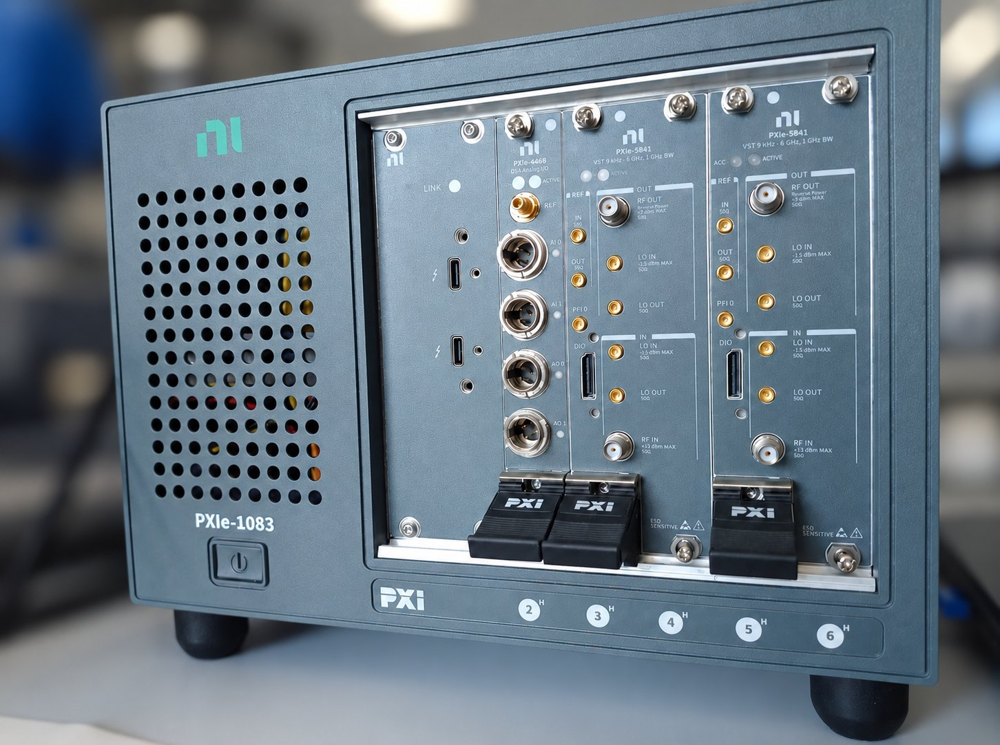

Integrált mérőrendszer-vezérlő keretrendszer RF szignálgenerátorok komplex automatizált karakterizálásához.
A rendszer NRP-Z teljesítménymérőket, FSV spektrumanalizátorokat és Pendulum
frekvenciamérőket vezérel egyetlen VBA/Python alapú automatizálási rétegen keresztül,
kétciklusú linearitásmérési sémával és négyzónás átlagoló algoritmussal.
Mérőrendszer

NI PXIe-1083 PXI Express keret — PXIe-4468 DSA analóg I/O (24 bit) és két PXIe-5841 vektoriális jeladó-vevő (VST, 9 kHz–6 GHz, 1 GHz pillanatnyi sávszélesség). A vezérlés Thunderbolt 3-on megy a laptopról; a VST-khez saját Python/Tkinter mérőalkalmazás készült.
Eszközök
Teljesítménymérő
R&S NRP-Z
USB/GPIB csatolás, −67…+44 dBm tartomány. Négyzónás átlagolás alacsony teljesítményű mérésekhez.
Szignálgenerátor kimeneti szint vs. beállított érték — zajszint és nemlinearitás szimulálva
Négyzónás átlagoló séma
Alacsony teljesítményű mérési tartományban a zajszint torzítja az egyszerű átlagot.
A négyzónás séma a teljesítménytartomány négy részére külön átlagoló ablakot alkalmaz.
Zóna
Tartomány
Átlagoló ablak
Indoklás
A
> −10 dBm
8 minta
Nagy SNR, gyors konvergencia
B
−10 … −30 dBm
16 minta
Közepes SNR, kiegyensúlyozott
C
−30 … −50 dBm
32 minta
Alacsony SNR, bővített átlagolás
D
< −50 dBm
64 minta
Zajhatár közelében, maximális átlagolás
Funkciók
▸Automatizált kétciklusú mérési séma: az első ciklus durva felmérést végez, a második finomhangolja az átlagoló ablakokat a négyzónás modell alapján.
▸VISA/SCPI réteg VBA-ban és Pythonban — eszközfüggetlen vezérlési logika, könnyen bővíthető új műszerekkel.
▸SFE100 Python Excel-parser: in-place lista mutáción alapuló LabVIEW Python Node integráció a mérési naplók automatikus feldolgozásához.